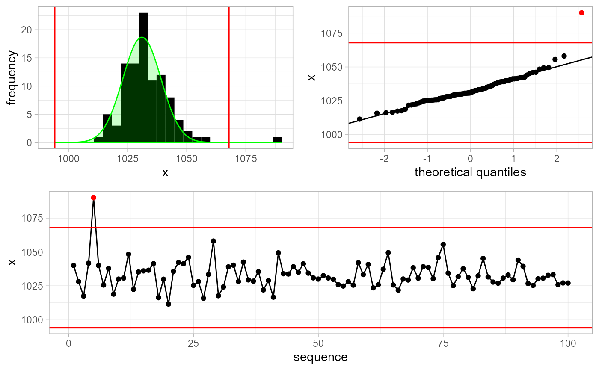
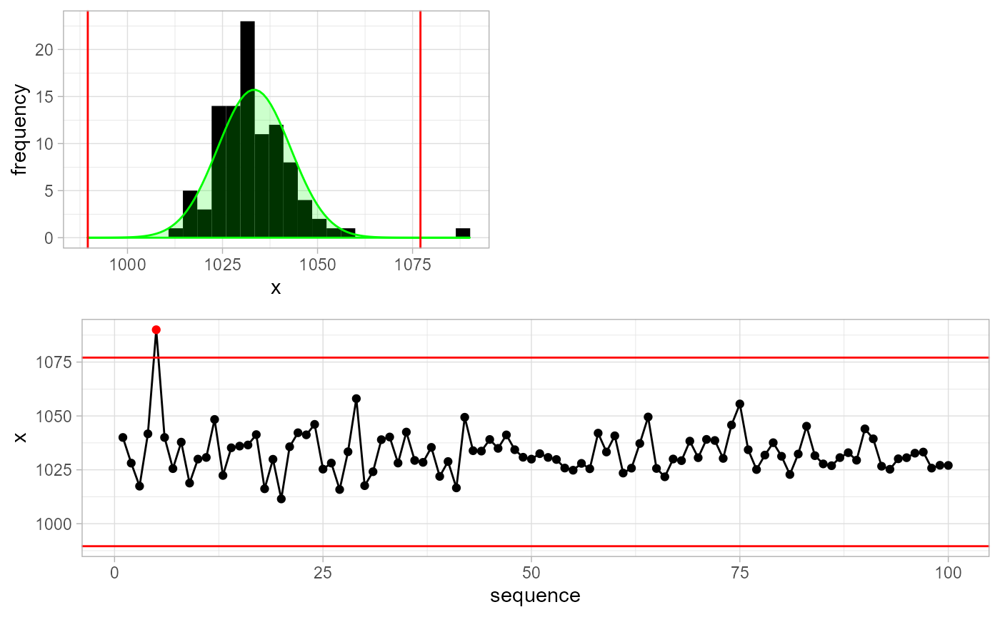
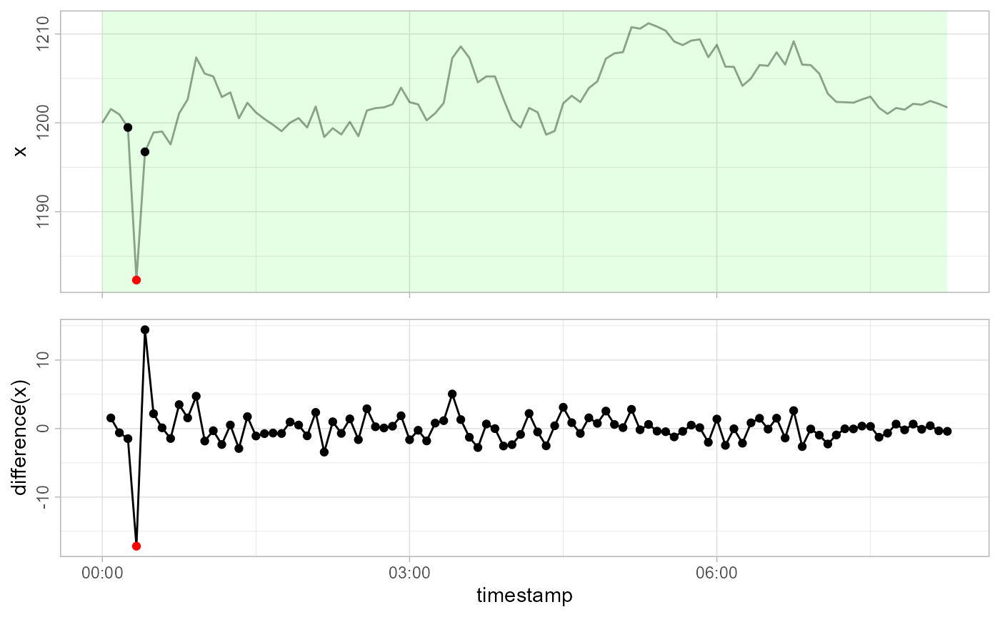
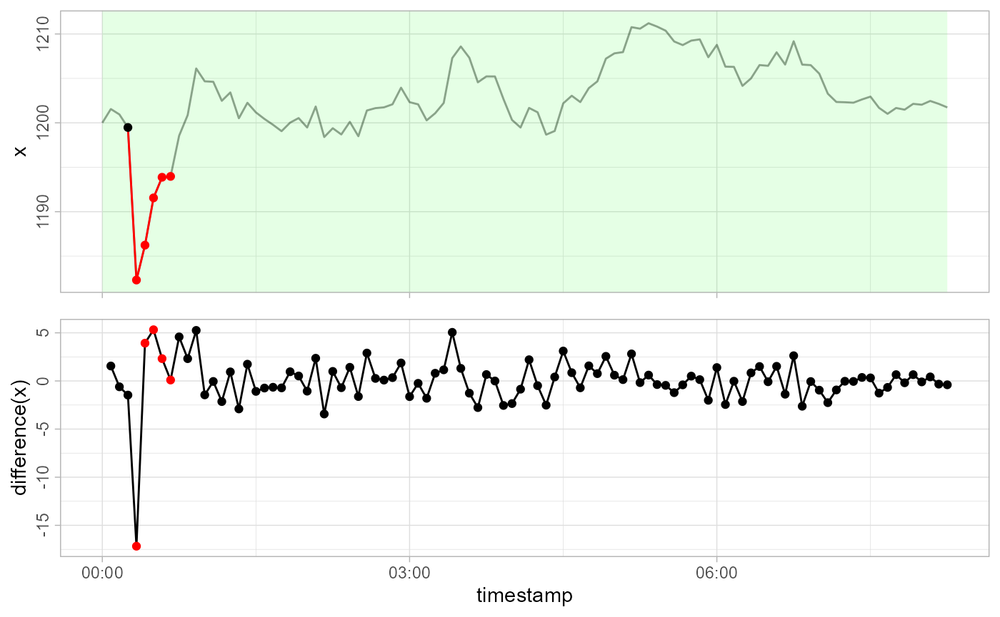

gwloggeR is a package for automatizing flagging of outliers, levelshifts and temporal changes in raw airpressure and hydrostatic pressure data.
Here you find the basic building-blocks of the package. Before continuing, make sure you have corerctly installed the last stable version of gwloggeR.
Detect functions
At its core gwloggeR consists of several detect_ functions which take as input a vector of observations, and return a boolean vector of the same lenghth specifying TRUE for each positive detection.
Currently, there are three detect_ functions defined:
-
gwloggeR::detect_outliers()which detects outliers. -
gwloggeR::detect_levelshifts()which detects levelshifts. -
gwloggeR::detect_temporalchanges()which detects changes that have a temporal effect with an exponential decay.
These functions are mainly to be used with raw air and hydrostatic pressure data.
Air pressure
The underlying assumption for air pressure data is that it is normaly distributed.
Lets generate some sample air pressure data. Based on Belgium, our gaussian parameter estimates for air pressure are: \(\hat{\mu} = 1033 \; cmH_2O\) and \(\hat{\sigma} = 9.5 \; cmH_2O\)

Detect outliers
Now lets add an outlier to x. An outlier we define as a single extreme value. E.g. \(6 \times \hat{\sigma}\).
x[5L] <- mu + 6*sigma
plot(x, type = 'l')Without apriori information
Assuming we do not have any apriori information about x, we can execute:
gwloggeR::detect_outliers(x, plot = TRUE)
#> [1] FALSE FALSE FALSE FALSE TRUE FALSE FALSE FALSE FALSE FALSE
#> [ reached getOption("max.print") -- omitted 90 entries ]Note the optional plot = TRUE argument. In that case, besides the boolean vector output signifying that the 5-th observation is an outlier, we also get a plot explaining why it is an outlier.
With apriori information
We can improve detection methods by supplying a-priori information about x. For example, in this case we know that x represents air pressure measurements in Belgium. As such, we make an apriori object and supply this information to the detection function.
apriori <- gwloggeR::apriori('air pressure', units = 'cmH2O')
gwloggeR::detect_outliers(x = x, apriori = apriori, plot = TRUE)
#> [1] FALSE FALSE FALSE FALSE TRUE FALSE FALSE FALSE FALSE FALSE
#> [ reached getOption("max.print") -- omitted 90 entries ]Without a-priori information the detect_outliers() function will assume normality of x and estimate the \(\hat{\mu}\) and \(\hat{\sigma}\) parameters in a robust way. When we supply a-priori information, then other extra assumptions might apply and the detection result will improve.
Hydrostatic pressure
The underlying assumption for hydrostatic pressure is that it is a pure random walk with a gaussian error term. We also assume that de variance of the error term depends on the time-interval between observations. For example, if a time-interval is 5 minutes, then we do not expect a change of more than 10 cmH2O.
Armed with thise assumption, lets generate some sample data.
n <- 100L
x <- cumsum(c(1200, rnorm(n - 1L, mean = 0, sd = 10/6)))
timestamps <- seq(as.POSIXct('2000-01-01'), by = '5 min', length.out = 100L)
plot(timestamps, x, type = 'l')
Detect outliers
Now lets add an outlier to our observations x. Here also we define an outlier as a single extreme value in the random walk, but which does not have any effect on subsequent values.
x[5L] <- x[5L] - 15
plot(timestamps, x, type = 'l')
Our x is not normaly distributed. Remeber that detect_outliers() assumes normality of x? So if we do not provide any a-priori information about x, the outlier detection will be bad. To improve it, we state that x is hydrostatic pressure data.
apriori <- gwloggeR::apriori('hydrostatic pressure', units = 'cmH2O')Note also, that in this case, we also need to supply timestamps to the detection function. This is because the underlying model also considers time-intervals between observations.
gwloggeR::detect_outliers(x, apriori = apriori, timestamps = timestamps, plot = TRUE)
#> [1] FALSE FALSE FALSE FALSE TRUE FALSE FALSE FALSE FALSE FALSE
#> [ reached getOption("max.print") -- omitted 90 entries ]See how the outlier is catched?
Detect levelshifts
Contrary to outliers, levelshifts do have a lasting constant effect on the random walk. Lets simulate one:
x[6L:9L] <- x[6L:9L] - 15
plot(timestamps, x, type = 'l')
Now let us see how detect_levelshifts() handles this.
gwloggeR::detect_levelshifts(x = x, timestamps = timestamps, apriori = apriori, plot = TRUE)#> [1] FALSE FALSE FALSE FALSE TRUE FALSE FALSE FALSE FALSE TRUE
#> [ reached getOption("max.print") -- omitted 90 entries ]Detect temporal changes
Contrary to levelshifts that have a constant effect, temporal changes decay exponentialy with time. First we undo the levelshift, and then simulate a temporal change with a decay factor of 0.7:
x[5L:9L] <- x[5L:9L] + 15
x[5L:15L] <- x[5L:15L] - 15*0.7^(0:10)
plot(timestamps, x, type = 'l')Now lets see how detect_temporalchanges() reacts:
gwloggeR::detect_temporalchanges(x = x, timestamps = timestamps, apriori = apriori, plot = TRUE)
#> [1] FALSE FALSE FALSE FALSE TRUE FALSE FALSE FALSE FALSE FALSE
#> [ reached getOption("max.print") -- omitted 90 entries ]